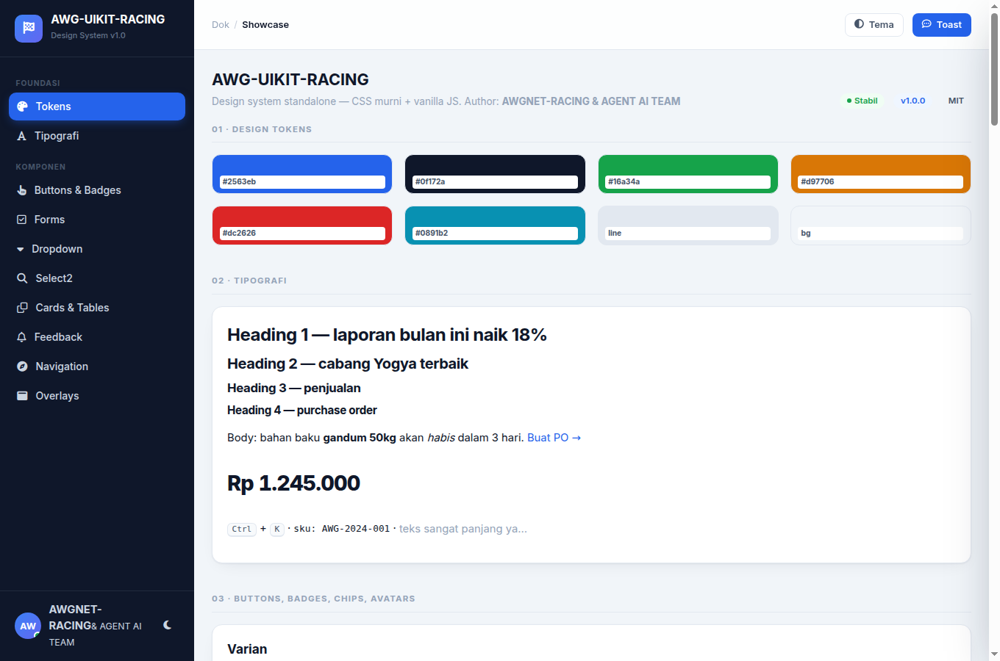

22 komponen siap produksi: tabel dengan bulk action, chart SVG live, peta Leaflet, kanban work order, chat, hingga invoice siap cetak. Tanpa jQuery, tanpa CDN, tanpa build step wajib.

Setiap komponen lahir dari dashboard ISP yang berjalan: monitoring OLT ZTE, work order teknisi, tagihan pelanggan. Yang tidak terpakai di lapangan, tidak masuk kit.
Cari, sort, pagination, bulk action, dan export. 1.000 baris tetap mulus karena render per halaman.
Line, bar, donut — dengan tooltip, crosshair, dan update live. Nol dependensi chart library.
Leaflet self-hosted. Saat tile OSM gagal, fallback SVG otomatis menampilkan posisi node berlabel.
Terang, gelap, ikuti sistem. Plus toggle densitas compact untuk layar NOC yang padat data.
Gauge RSSI/SNR, monitoring PON, work order dengan SLA — vocabulary jaringan, bukan generic admin.
Audited & teruji
Escaping XSS, guard CSV injection, sanitasi popup peta. 20 test regresi jalan di setiap push (CI hijau).
Tanpa langganan, tanpa telemetry, tanpa akun. Kode turun ke laptop Anda dan tetap jalan 10 tahun lagi.
Kenapa ada dua? Lisensi tim membeli kecepatan: onboarding call 60 menit, prioritas permintaan komponen, dan hak meminta fitur dirancang untuk kasus Anda. Kode kedua lisensi identik.
Dijawab langsung — kalau pertanyaan Anda belum ada di sini, email lebih cepat.
Boleh, di kedua lisensi. MIT membolehkan penggunaan komersial apa pun. Yang tidak boleh: menjual ulang kit ini sendiri sebagai produk UI kit pesaing.
Tidak. Ini CSS + vanilla JS murni. Sudah dipakai di Laravel (Blade layout tersedia), PHP native, dan bisa dirender dari backend apa pun yang menghasilkan HTML. Untuk React/Vue, pakai sebagai stylesheet global dan panggil inisialisasi di onMount/useEffect.
Dashboard ISP sering diakses dari ruang server atau jaringan internal tanpa akses internet penuh. Semua aset — font Inter, Leaflet, ikon — self-hosted, jadi halaman tetap utuh di lingkungan terisolasi. Bonus: tanpa request pihak ketiga, tidak ada kejutan GDPR atau telemetry.
Seluruh bundle CSS + JS hasil build sekitar 38 KB gzip — lebih kecil dari satu screenshot thumbnail. Chart dirender SVG murni tanpa canvas library.
Fokus keyboard ditangani di modal, drawer, dan wizard. Kontras mengikuti WCAG AA di kedua tema. Skip link dan label ARIA ada di komponen interaktif. Kendali kanban bisa dioperasikan keyboard penuh.
Lewat GitHub Security Advisory (privat) untuk isu keamanan, atau issue biasa untuk bug. Kebijakan lengkap ada di SECURITY.md — konfirmasi dalam 3×24 jam.